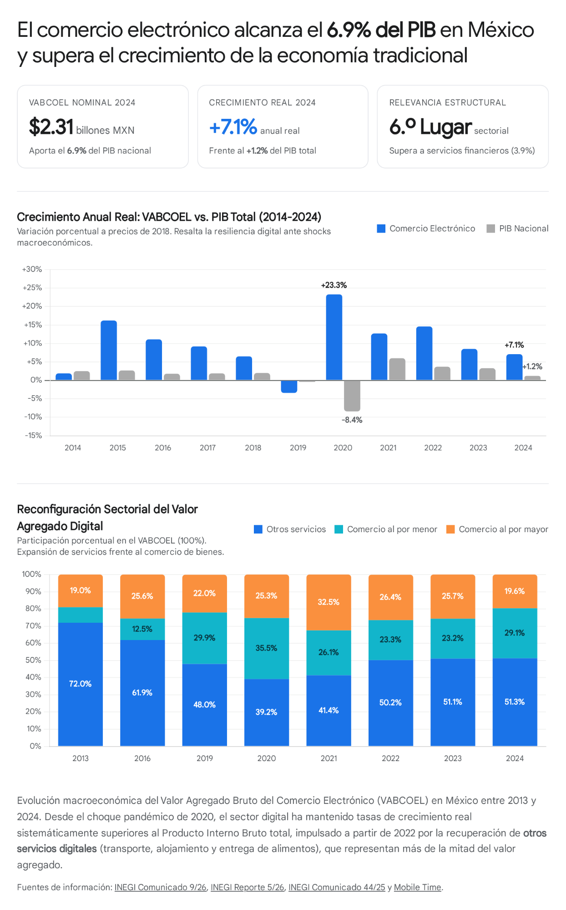
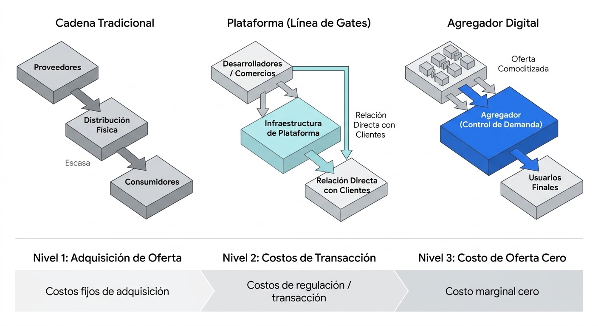
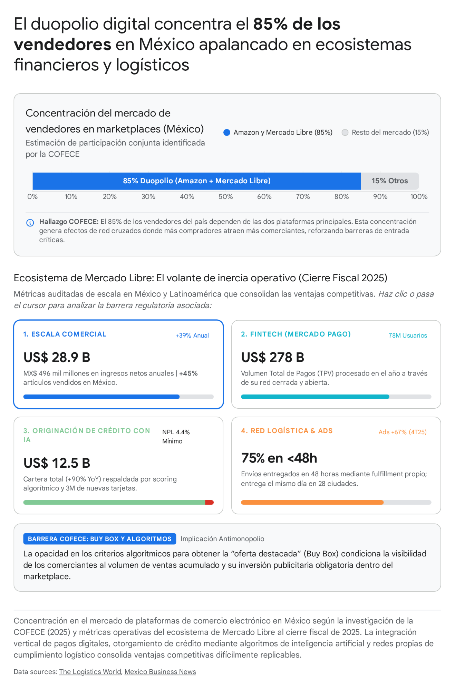

Universidad Nacional Autónoma de México
Facultad de Ingeniería · División de Ciencias Sociales y Humanidades
Proyecto · Introducción a la Economía
Economía Digital y
Estructura de mercado, dinámica macroeconómica y desafíos regulatorios
Portada. Presentarse como Equipo 3 y leer el título con el subtítulo: Estructura de mercado, dinámica macroeconómica y desafíos regulatorios .
Recomendación: abrir con la pregunta motriz (diapositiva 2) en vez de con la agenda.
La pregunta que ordena el análisis
¿Qué le ocurre al Estado cuando la producción se digitaliza?
1
Contabilidad nacional
Dejó de ser un epifenómeno: ya es un sector con peso propio en el PIB .
2
Sistema monetario
Altera la formación de precios y la transmisión de la política monetaria.
3
Estado de derecho
Aduanas, fiscalidad y trabajo se ajustaron a una realidad que cambió en años .
Lo que hace una década parecía una mejora en la logística de compra es hoy un sector económico de primer orden con reglas propias.
Medimos → explicamos la demanda → analizamos el poder de mercado → vemos la respuesta del Estado → abrimos el debate.
Diapositiva ancla — no se salta. Enunciar la pregunta: ¿qué le ocurre al Estado mexicano cuando la estructura de la producción se digitaliza?
Los tres frentes son las tres dimensiones del curso: contabilidad nacional (Hacienda), sistema monetario (Banco de México) y Estado de derecho (aduanas y trabajo).
Dejar 20 segundos de silencio en la pregunta antes de pasar. Es lo que ancla toda la exposición.
La franja de la derecha es la ruta de la exposición: medir → explicar la demanda → analizar el poder de mercado → ver la respuesta del Estado → abrir el debate.
Sección 1
¿Qué es y cómo se mide?
Sin claridad en la medición, los números que siguen no significan nada.
Divisor. Anunciar: sin claridad en la medición, los números que siguen no significan nada.
El criterio no es el medio de pago, es la red
INEGI: «el proceso de compra, venta o intercambio de bienes, servicios e información a través de redes informáticas, independientemente de si la liquidación financiera ocurre en línea o presencial ».
CASO 1 · ¿TIENDA FÍSICA?
Tienda física
compra de un artículo
Terminal conectada
SÍ es comercio
electrónico
Criterio: hay red informativa. No importa dónde se pague.
CASO 2 · ¿HAY TIENDA?
Empresa A
compra insumos
Transferencia
SÍ es comercio
electrónico
Sin tienda, sin envío físico. También cuenta.
LA DEFINICIÓN ES MÁS AMPLIA QUE «TIENDA EN LÍNEA»
Incluye servicios sin envío físico alguno:
Transporte bajo demanda
Alojamiento
Entrega de alimentos
Medios y publicidad
→ explica por qué los servicios digitales son hoy
la mayor parte del valor agregado del sector
Fuente: INEGI, definición del VABCOEL.
El punto clave: el INEGI no define por el medio de pago sino por la existencia de una red informativa .
Recorrer el diagrama de izquierda a derecha: caso 1 — compra en tienda física cerrada con terminal conectada: SÍ es comercio electrónico. Caso 2 — transferencia entre dos empresas sin tienda: TAMBIÉN es comercio electrónico.
Consecuencia (franja inferior): la definición es más amplia que «tienda en línea» e incluye servicios sin envío físico —transporte bajo demanda, alojamiento, entrega de alimentos, medios—. Eso explica por qué los servicios digitales son hoy la mayor parte del valor agregado del sector. Volveremos a esto en la diapositiva 7.
Dos cifras que parecen contradecirse… y no lo son
VABCOEL · INEGI
Valor agregado de toda la actividad electrónica
MINORISTA
MAYORISTA (B2B)
SERVICIOS DIGITALES
19.6%
51.3%
VENTAS EN LÍNEA · AMVO
Valor de mercado minorista
MINORISTA EN LÍNEA
No incluye:
· comercio al por mayor (B2B)
· servicios digitales
· intermediación de plataformas
2,308,458
millones de pesos · INEGI
789,700
millones de pesos · AMVO
No son discrepancia:
son universos estadísticos distintos
El problema de la medición: asignar una transacción en red a un sector sin duplicar la actividad ya contabilizada. Un producto vendido en un marketplace no desaparece el comercio minorista: cambia de canal .
El error de lectura más común: comparar ambas cifras como si midieran lo mismo.
Fuentes: INEGI (VABCOEL 2024, SCN México), AMVO (Estudio de Ventas Online).
Diapositiva clave del proyecto. Ésta es la corrección metodológica más importante del documento.
Recorrer el diagrama: el bloque azul (VABCOEL) contiene minorista + mayorista + servicios digitales. El bloque dorado (AMVO) contiene sólo minorista en línea. No son discrepancia: son universos distintos.
El problema de medición de fondo: asignar una transacción en red a un sector sin duplicar la actividad ya contabilizada. Un producto vendido en un marketplace no desaparece el comercio minorista: cambia de canal.
Advertencia: comparar ambas cifras como si midieran lo mismo es el error de lectura más común sobre el tema.
De 3.3% a 6.9% del PIB en una década

El dato de 2020 no es tendencia: el PIB cayó −8.4% y el comercio electrónico subió +23.3%, pero hacia 2022–2024 las tasas convergieron de vuelta al nivel pre-pandemia (14.6% → 8.5% → 7.1%). Fue aceleración temporal por sustitución forzosa .
Dejar la figura hablar sola 10 segundos. El dato que importa: en 2020 el PIB cayó −8.4% y el comercio electrónico subió +23.3%, pero la tendencia se revirtió (14.6% → 8.5% → 7.1%).
Adelantar la limitación causal que se retomará en la sección 6: fue aceleración temporal por sustitución forzosa, no cambio estructural permanente.
Sexto sector de la economía — y no es envío de paquetes
SI FUERA UN SECTOR MÁS
Industrias manufactureras
20.1%
Comercio al por menor
9.5%
Comercio al por mayor
9.2%
Comercio electrónico
6.9%
Transportes y almacenamiento
6.6%
+7.1%
Crecimiento real 2024 — casi seis veces el +1.2% del PIB nacional
×4.1
De 564,928 a 2,308,458 millones de pesos corrientes (2013→2024)
Iguala a construcción , supera a transportes y casi triplica a servicios financieros. La omnicanalidad lo sostiene: 85% de los consumidores combina canales.
Fuentes: INEGI (VABCOEL 2013–2024), Mobile Time, AMVO.
La idea contraintuitiva: el comercio electrónico ya no es principalmente enviar paquetes. Los servicios digitales son 51.3% del valor agregado, el minorista 29.1%, el mayorista 19.6%.
Fichas de la derecha: +7.1% de crecimiento real en 2024 (casi seis veces el +1.2% del PIB nacional) y ×4.1 en términos nominales entre 2013 y 2024.
La tabla de la izquierda: 6.9% iguala a construcción (20.1% las manufacturas, 9.5% el minorista total), supera a transportes (6.6%) y casi triplica a servicios financieros (3.9%).
Sección 2
Determinantes microeconómicos
Por qué cambia la conducta de compra: de los costos de distribución a la lógica de la bancarización
Divisor. Transición: ya sabemos cuánto pesa; ahora, por qué cambia la conducta de compra .
La estructura de costos: la clave que no se ve
DISTRIBUCIÓN FÍSICA
Estructura de costos
Variables
Costo marginal de servir a un usuario más
Alto y creciente
Causa
Almacenamiento, transporte, personal
Consecuencia
Limita los intermediarios
DIGITALIZACIÓN
DISTRIBUCIÓN DIGITAL
Estructura de costos
Fijos
Costo marginal de servir a un usuario más
Casi nulo
Causa
Software, nube, marketing
Consecuencia
Rendimientos crecientes
Cada usuario adicional no sólo agrega demanda:
distribuye el costo fijo ya hundido sobre una base mayor
Costos marginales de reproducción y distribución → cero. Producto digital: se reproduce ilimitadamente sin costo incremental.
LA PARADOJA
La misma economía que produce los precios bajos que benefician al consumidor produce también las barreras que los hacen frágiles. Dos caras del mismo objeto.
Fuentes: Samuelson & Nordhaus, Economía ; Rochet & Tirole.
Diapositiva de fondo conceptual. Insistir: para entender por qué la economía digital se organiza en torno a plataformas hay que empezar por los costos , no por la plataforma.
El diagrama es el ancla: distribución física (estructura de costos variables , costo marginal alto y creciente por almacenamiento/transporte/personal) → distribución digital (estructura fija de software/nube/marketing, costo marginal casi nulo).
El efecto decisivo: cada usuario adicional no sólo agrega demanda, distribuye el costo fijo ya hundido sobre una base mayor. De ahí salen los rendimientos crecientes, que son la base microeconómica de los efectos de red de la sección 3.
La paradoja (franja inferior): la misma economía que produce los precios bajos que benefician al consumidor produce también las barreras que hacen esos precios frágiles. Dos caras del mismo objeto, y todo el debate regulatorio posterior se juega ahí.
Cuatro determinantes de la demanda… y un quinto
1
Transparencia
Más ofertantes a la vez → menor costo de búsqueda y menor dispersión de precios.
2
Conveniencia
Entrega a domicilio, 24/7, rastreo → menor costo no monetario . Erode al minorista físico sin eliminarlo.
3
Amplitud
Una plataforma agrega miles de vendedores: equivale a un catálogo sin límite de existencias.
4
Confianza y pago
Decisivo en México: sin medio de pago verificable no hay transacción.
El quinto: efecto de red del lado de la demanda
Es el mecanismo que genera la tendencia a la concentración que se analiza en la sección 3.
Más compradores
Más vendedores
Más surtido
y el ciclo vuelve a empezar
Fuentes: Mankiw, Principios de Economía ; Cavallo (HBS/NBER).
Cuatro determinantes + un quinto. No leer las tarjetas una por una: leer los títulos y desarrollarlos en una frase.
Transparencia (Cavallo: menos costo de búsqueda, menos dispersión), conveniencia (entrega, 24/7, rastreo — erosiona al minorista físico sin eliminarlo), amplitud (catálogo sin límite de existencias), confianza e infraestructura de pago — este último es el decisivo en México.
El quinto es el que importa: el efecto de red del lado de la demanda, que se explica en el bucle de la derecha. Es el mecanismo que genera la concentración de la sección 3.
Volumen enorme, adopción baja
COMPRAS EN LÍNEA · POBLACIÓN ADULTA (OCDE 2024)
Irlanda
94.7% Promedio OCDE
71.3%
México
33.2%
Colombia
15.3%
PENÚLTIMO LUGAR DE 31 NACIONES
67.2 millones de mexicanos (84% de los usuarios de internet) compraron
digitalmente. La brecha no es de volumen, es de bancarización.
BRECHA URBANO-RURAL
Zonas urbanas
39.2%
Áreas rurales
19.1%
LA LÓGICA DE LA BANCARIZACIÓN
RFC como identificador y cuenta bancaria como infraestructura de pago
son condición de previo. Misma falla del desarrollo financiero mexicano.
Fuentes: OCDE (comparables 2024), Xataka, El Economista, Méeplab.
La contradicción estructural. Diagrama izquierdo: 67.2 millones compraron en línea (84% de los usuarios de internet) pero solo 33.2% de la población adulta compró bajo estándares OCDE — penúltimo lugar de 31 países, frente al 71.3% del promedio y el 94.7% de Irlanda.
Diagrama derecho: 39.2% en zonas urbanas contra 19.1% en áreas rurales.
La causa no es cultural, es institucional: el RFC como identificador y la cuenta bancaria como infraestructura de pago son condición de previo. Es la misma falla que ha caracterizado el desarrollo financiero mexicano, y por eso el comercio electrónico sigue siendo esporádico para millones.
El segmento invisible: el comercio entre empresas
LA DIFERENCIA NO ES DE ESCALA, ES DE NATURALEZA
En una transacción empresarial lo central no es el precio sino el tiempo de búsqueda .
VÍA FÍSICA
Un comprador industrial busca un proveedor
capaz de cumplir la especificación técnica
y con historial de cumplimiento.
Semanas de trabajo administrativo
MERCADO ELECTRÓNICO
Un mercado como Amazon Business cruza
volúmenes de oferta y demanda de
proveedores calificados.
Minutos
EL EFECTO MÁS IMPORTANTE
México es una economía manufacturera integrada con EE. UU.: si su cadena de valor compra mejor, la integración manufacturera mexicana también.
19.6%
del valor agregado del sector es comercio al por mayor — y es invisible en el debate público
Consecuencias
Menores costos de transacción: empresas pequeñas acceden a insumos antes reservados a las grandes
Mejor asignación por cruce de volúmenes de oferta y demanda
Mayor productividad del tramo industrial del país
Fuentes: INEGI (VABCOEL 2024); CEPAL; OMC.
Sección que casi nadie expone — buen momento parapia. El B2B es 19.6% del valor agregado y es invisible en el debate público.
Recorrer el diagrama: en una transacción empresarial lo central no es el precio sino el tiempo de búsqueda . Un comprador industrial busca un proveedor capaz de cumplir la especificación técnica y con historial de cumplimiento —semanas de trabajo administrativo—. Un mercado como Amazon Business lo comprime a minutos.
El efecto más importante (franja inferior): la productividad del tramo industrial. México es una economía manufacturera integrada con EE. UU.: si la cadena de valor estadounidense compra mejor, la integración manufacturera mexicana también.
Si sobra tiempo, recortar la consecuencia 1 y quedarse con la 3.
Sección 3
Mercados de dos lados y Agregación
Por qué la concentración es endógena y no el resultado de conductas deliberadas
Divisor. Pregunta guía: ¿por qué la concentración es endógena y no el resultado de conductas deliberadas?
La plataforma como intermediario necesario
COMPRADORES (b)
heterogéneos en vb
Tarifa pb
$ 0
Rol
loss leader
VENDEDORES (s)
heterogéneos en vs
Tarifa ps
Alta
Rol
profit center
PLATAFORMA
costo de intermediación: c
ub = vb − pb + ns zb
la demanda efectiva es el producto
Db (pb ,ps ) × Ds (pb ,ps )
EXTERNALIDADES DE RED CRUZADAS
más compradores ⟶ más vendedores ⟶ más compradores: por eso el precio total p se reparte de forma estratégica entre los dos lados
MULTIHOMING: el vendedor en Amazon y Mercado Libre a la vez intensifica la competencia de precios — la coexistencia es lo que impide que cualquiera capture el 100% de los vendedores
Fuentes: Rochet & Tirole, Review of Economic Studies (2003, 2006); SIEP.
No entrar a las fórmulas. Explicar el mecanismo: la plataforma es el intermediario necesario entre dos grupos que no se encuentran solos.
Recorrer el diagrama: compradores a la izquierda pagando pb = 0 (loss leader), vendedores a la derecha con ps alto (profit center), la plataforma en el centro con el costo de intermediación c. Las flechas cruzadas son las externalidades de red: más compradores atraen más vendedores y viceversa.
El teorema fundamental: la plataforma no elige sólo el precio total p, sino cómo lo reparte entre los dos lados, según las elasticidades de las cuasi-demandas. De ahí el subsidy cruzado.
Multihoming (franja inferior): el vendedor en Amazon y Mercado Libre a la vez intensifica la competencia de precios. Implicación directa para México: la coexistencia de plataformas es lo que impide que cualquiera capture el 100% de los vendedores.
La línea de Bill Gates: plataforma o agregador
Antes de internet, el recurso escaso era la distribución física . Hoy, con oferta abundante y distribución gratuita, el recurso escaso es la atención .
PLATAFORMA
Empodera al tercero · Shopify, Windows
El comerciante conserva…
su marca
sus datos
la relación directa con el comprador
El riesgo se distribuye
en todo el ecosistema.
AGREGADOR
Controla la demanda · Amazon, Google, Booking
El proveedor se vuelve…
insumo intercambiable
depende del agregador para llegar al comprador
Se apropia de la relación
directa y comoditiza al proveedor.
LÍNEA DE BILL GATES
el valor económico del ecosistema que habita sobre la plataforma supera al valor de la empresa que la construyó
Tres condiciones: relación directa con el usuario · costo marginal ≈ 0 · atraer proveedores en términos mejores conforme escala la demanda
Fuentes: B. Thompson, Stratechery ; Haba & Buteau.
La inversión de la cadena de valor. Antes de internet, el recurso escaso era la distribución física —rotativas, flotas de camiones, ubicaciones inmobiliarias— y las empresas dominantes integraban hacia atrás la distribución con el control de la oferta. La digitalización eliminó el costo marginal de reproducción y distribución: en un entorno de oferta abundante y distribución gratuita, el recurso verdaderamente escaso pasó a ser la atención y la demanda del usuario .
La línea de Bill Gates (diagrama): separa las verdaderas plataformas de los agregadores. El criterio definitorio es que el valor económico del ecosistema que habita sobre la plataforma supera al valor de la empresa que la construyó .
Plataforma (verde): empodera al tercero. En Shopify los comerciantes venden con las herramientas pero conservan su marca, sus datos y la relación directa con el comprador . El riesgo se distribuye en todo el ecosistema. Ejemplos: Shopify, Windows.
Agregador (rojo): controla la demanda. Amazon, Google y Booking.com se interponen entre proveedor y consumidor, se apropian de la relación directa y comoditizan a los proveedores , convirtiéndolos en insumos intercambiables que dependen del agregador para acceder a una demanda que no pueden alcanzar por sí mismos.
Las tres condiciones (franja inferior): relación directa con el usuario, costo marginal cercano a cero al atender a cada usuario adicional, y atraer proveedores a la red en términos cada vez más favorables conforme escala la demanda.
Tres niveles de poder de agregación

Nivel 1 · Costo de adquisición
Netflix vs. Spotify: Netflix amortiza contenido fijo con cada suscriptor nuevo; Spotify enfrenta costos marginales positivos porque la oferta está en tres disqueras oligopólicas .
Nivel 2 · Costo de transacción
Uber y Airbnb: verificaciones de antecedentes y cumplimiento normativo por cada conductor o anfitrión. El multihoming limita el bloqueo absoluto.
Nivel 3 · Costo de oferta nulo
TikTok, X, tiendas de apps: los usuarios suben contenido sin fricción. Con publicidad automatizada a costo marginal cero → super-agregadores .
Límite físico: en abarrotes perecederos, donde la calidad se degrada en el transporte, el centro de distribución pierde ventaja frente a la tienda física.
Recorrer la figura de izquierda a derecha (cadena tradicional → plataforma → agregador), luego los tres niveles: costo de adquisición (Netflix amortiza contenido fijo con cada suscriptor nuevo; Spotify enfrenta costos marginales positivos porque la oferta está en tres disqueras oligopólicas), costos de transacción (Uber y Airbnb: verificaciones de antecedentes y cumplimiento normativo por cada conductor o anfitrión) y costo de oferta nulo (TikTok, X, tiendas de apps: los usuarios suben contenido sin fricción, con publicidad automatizada a costo marginal cero → super-agregadores).
Límite físico (pie): en abarrotes perecederos, donde la calidad se degrada en el transporte, el centro de distribución pierde ventaja frente a la tienda física tradicional.
El volante de inercia: cómo se construye el poder de mercado
US$ 28.9 B
Ingresos netos 2025 · +39% · 78 M usuarios
US$ 278 B
Volumen total de pagos · Mercado Pago
US$ 12.5 B
Cartera de crédito · +90% con IA
Más transacciones
cada venta alimenta el modelo
Más datos de pago
baja el costo marginal
Crédito más barato
el vendedor se financia
Más vendedores
atraídos por la financiación
Minorista
más completo
el ciclo se cierra y se acelera solo
Por qué importa teóricamente: si el volante se acelera solo, la ventaja dinámica puede pesar más que la estática en costos. Es un mecanismo de concentración que no requiere conducta deliberada.
Fuentes: Mexico Business News; 10-K de Mercado Libre (2025); Trefis.
Diapositiva nueva del PDF Equipo 3. El caso de Mercado Libre muestra cómo se construye el poder: el comercio minorista actúa como base de datos que alimenta tres negocios adyacentes de altísimo margen.
Las tres cifras: US$28.9 B de ingresos netos (+39%, 78 M de usuarios activos mensuales, +45% en artículos vendidos en México), US$278 B de Volumen Total de Pagos en Mercado Pago, US$12.5 B de cartera de crédito (+90% con modelos de riesgo basados en IA).
Lo importante es el volante (el flujo de 5 pasos): más transacciones → más datos de pago → crédito más barato → más vendedores → minorista más completo. El ciclo se cierra y se acelera solo , y por eso la ventaja dinámica puede pesar más que la estática en costos.
Consecuencia teórica: es un mecanismo de concentración que no requiere conducta deliberada. Es el puente hacia la sección 3.
El caso COFECE: 85% del mercado de vendedores

Expediente IEBC-001-2022. Dictamen preliminar: febrero 2024. Resolución final: septiembre 2025.
Dato ancla: Amazon y Mercado Libre concentran cerca del 85% del mercado de vendedores en marketplaces digitales en México.
Expediente IEBC-001-2022: dictamen preliminar febrero 2024, resolución final septiembre 2025.
Dos paradigmas de competencia
Escuela de Chicago
La competencia se equipara con el bienestar del consumidor : precios bajos hoy. Las economías de escala y la integración vertical se leen como eficiencias pro-competitivas .
Neo-Brandeis · Lina Khan
Mirar sólo si los precios están bajos hoy ignora la estructura del mercado y el proceso competitivo de largo plazo.
DOS MECANISMOS DE EXCLUSIÓN
1 · Integración vertical
Marketplace + logística + pagos + crédito + publicidad: el operador
controla las instalaciones esenciales de las que dependen sus rivales.
2 · Conflicto por rol dual
Como administrador del mercado y vendedor minorista: recopila datos,
lanza marcas privadas en los nichos de mayor margen y las favorece.
LAS CUATRO BARRERAS DE LA COFECE
Redes artificiales
Membresías con streaming
Opacidad del Buy Box
Criterios no revelados
Tying logístico
Condiciona la visibilidad
Barreras de entrada
Capital y tecnología masivos
Fuentes: Khan, Yale Law Journal (2017); COFECE (IEBC-001-2022); Lexxion.
Contrastar las dos columnas de arriba. Chicago: eficiencia = precios bajos hoy; las economías de escala y la integración vertical se leen como eficiencias pro-competitivas. Khan: se ignora la estructura del mercado y el proceso competitivo de largo plazo; Amazon reportó pérdidas y márgenes mínimos a propósito para expandir escala y eliminar competidores.
Los dos mecanismos de exclusión (fila del centro): integración vertical —el operador controla las instalaciones esenciales de las que dependen sus rivales— y conflicto por rol dual —recopila datos de sus vendedores, lanza marcas privadas en los nichos de mayor margen y las favorece algorítmicamente.
Las cuatro barreras (fila inferior): redes artificiales por membresías empaquetadas con streaming · opacidad algorítmica en la asignación del Buy Box · tying logístico (la visibilidad en el Buy Box queda condicionada al uso de la paquetería propia) · barreras financieras y tecnológicas de entrada.
La paradoja de la resolución
LO QUE LA COFECE CONFIRMÓ
La existencia formal de las cuatro barreras
Diagnóstico completo y documentado
LO QUE NO HIZO
Sansiones ni medidas correctivas vinculantes
El remedio quedó sin aplicar
LA PARADOJA REGULATORIA
El mismo acto que identifica las barreras es el que no puede acordar cómo tratarlas. No hubo consenso suficiente ante la falta
de certeza sobre si eliminarlas destruiría los beneficios de eficiencia y conveniencia para consumidores y MiPyMEs.
La consecuencia: este caso prefigura la respuesta mexicana en los tres frentes — regular, formalizar y transparentar en lugar de restringir .
Fuentes: The Logistics World; Expansión (resolución de septiembre de 2025).
Diapositiva clave del proyecto — es el corazón del argumento. La COFECE confirmó formalmente la existencia de las cuatro barreras (bloque verde) y no impuso sanciones ni medidas correctivas vinculantes (bloque rojo).
Por qué: no hubo consenso suficiente ante la falta de certeza sobre si eliminar esas prácticas destruiría los beneficios de eficiencia y conveniencia que los programas de membresía y la logística integrada generan para los consumidores finales y las MiPyMEs.
La paradoja (franja dorada): el mismo acto que identifica las barreras es el que no puede acordar cómo tratarlas.
El puente: este caso prefigura la respuesta mexicana en los tres frentes — regular, formalizar y transparentar en lugar de restringir . Volveremos a esto en la sección 5.
Sección 4
Fijación algorítmica de precios
El «Efecto Amazon» y su transmisión al caso mexicano: lo que la literatura estadounidense no pregunta
Divisor. Anunciar el giro: la máquina empieza a fijar los precios, y el Efecto Amazon tiene una transmisión específica al caso mexicano.
Precios algorítmicos y colusión tácita
Discriminación de precios
Con cookies · cliente cautivo
$ 26.24
Sin cookies · busca rival
$ 22.74
−13.3%
El algoritmo infiere elasticidad del historial de búsqueda.
Amazon lo atribuyó a pruebas aleatorias y reembolsó.
Precios «goteo» (drip pricing)
Precio base bajo → cargos obligatorios al final del pago. Respuesta (oct. 2026): iniciativa que prohíbe incorporar o revelar cargos que alteren el precio inicial (art. 76 Bis 1, fr. VIII, LFPC).
Colusión algorítmica tácita
Calvano et al. (American Economic Review ): algoritmos de Q-learning descentralizados, entrenados sólo para maximizar sus propias ganancias y sin haber sido programados para coludir , aprenden de forma autónoma a sostener precios supracompetitivos cercanos al monopolio.
LO QUE DESCUBREN SOLOS
Rival baja su precio
Capturar cuota
Fase finita de castigo
Guerra de precios
Retorno a la cooperación colusoria
Teoría de juegos
repetidos
Implicación para México: el marco legal exige acuerdos humanos , y no tiene cauce para una colusión que no los requiere.
Fuentes: Tong (algorithmic pricing); Calvano et al. (AER); Tobin Center for antitrust.
Dos cosas.
(a) Discriminación de precios (diagrama superior izquierdo): si el algoritmo detecta con cookies que el historial de búsqueda incluye el dominio de un competidor, infiere mayor elasticidad y ofrece descuento; si identifica a un cliente cautivo, extrae más excedente. El caso Amazon: el precio de un DVD cayó de $26.24 a $22.74 (−13.3%) al borrar las cookies; la empresa lo atribuyó a pruebas aleatorias y reembolsó. Los investigadores lo llaman «la trampa de lo barato en línea»: los usuarios no son suficientemente escépticos. A esto se suma el drip pricing , con la iniciativa de octubre de 2026 que prohíbe revelar cargos obligatorios en etapas posteriores (art. 76 Bis 1 fr. VIII, LFPC).
(b) Colusión algorítmica tácita (Calvano et al., AER): algoritmos de Q-learning descentralizados, entrenados sólo para maximizar sus propias ganancias y sin haber sido programados para coludir , aprenden de forma autónoma a sostener precios supracompetitivos cercanos al monopolio. El diagrama muestra lo que descubren solos: el rival baja su precio → fase finita de castigo (guerra de precios) → retorno gradual a la cooperación colusoria. Es la teoría de juegos repetidos, sin nada escrito.
Contraste clave: el derecho de competencia exige probar un acuerdo humano , y no tiene cauce para una colusión que no los requiere.
El «Efecto Amazon» y su transmisión al caso mexicano
LO QUE CAVALLO REFUTÓ (HBS / NBER)
No es deprimir precios una vez: es transformar la formación de precios .
1 · Rigidez temporal
2008–2010: los precios duraban 7 a 9 meses .
Era algorítmica: 3 a 3.5 meses . En Amazon, la duración de
precios publicados es 20% más corta .
2 · Uniformidad espacial
La dispersión de precios entre códigos postales prácticamente
desapareció en los bienes que compiten con Amazon.
Las tres preguntas que la literatura estadounidense no formula
México no fija su política monetaria en un entorno cerrado.
¿Se traspasó por el canal cambiario el efecto de la competencia en línea estadounidense, anulando parte del efecto de una depreciación del peso?
¿Tiene esa compresión un equivalente modesto en una economía donde el consumo privado es el componente más grande del PIB?
Si los precios flexibles coexisten con los rígidos de Apple o IKEA, ¿obligan al Banco de México a sobreponderar sectores rígidos en su meta de inflación?
Debilita el estímulo real: si los precios se ajustan casi instantáneamente, bajar tasas se traduce directo en inflación sin impacto real.
Acelera el pass-through: precios uniformes a nivel nacional eliminan el aislamiento local ante choques externos.
Fuentes: Cavallo (NBER w25138; HBS); Kansas City Fed; Banco de México, Ley del BdeM art. 2º.
Diapositiva nueva del PDF Equipo 3 — es el aporte original de la presentación.
Bloque izquierdo: el término nació en 2017 con Janet Yellen, pero Cavallo (HBS/NBER) refutó la lectura simplista: el impacto estructural no es deprimir el nivel de precios una sola vez, es transformar la formación de precios . Los dos mecanismos: rigidez temporal (los precios duraban de 7 a 9 meses en 2008–2010 y pasaron a 3–3.5 meses con los algoritmos de rastreo competitivo; la frecuencia mensual de ajustes subió del 14% al 31–34%; y en Amazon la duración de los precios publicados es 20% más corta, lo que obligó a Walmart, Best Buy, Kroger y Safeway a actualizar más seguido) y uniformidad espacial (la dispersión entre códigos postales prácticamente desapareció en los bienes que compiten con Amazon; entre 2008 y 2017 las ventas en línea en EE. UU. pasaron del 3.6% al 9.5% del comercio minorista).
Las dos implicaciones (franja inferior): se debilita el canal de estímulo real —en el marco neokeynesiano la rigidez de precios es la condición para que la política monetaria no sea neutral a corto plazo— y se acelera el pass-through de choques.
Las tres preguntas (bloque dorado): este es el punto fuerte. El Banco de México busca la estabilidad del poder adquisitivo de la moneda, pero México no fija su política monetaria en un entorno cerrado: el tipo de cambio lo conecta con EE. UU. Leerlas literalmente: (1) ¿se traspasó por el canal cambiario el efecto de la competencia en línea estadounidense, anulando parte del efecto de una depreciación del peso? (2) ¿tiene esa compresión un equivalente modesto en una economía donde el consumo privado es el componente más grande del PIB? (3) si los precios flexibles de las plataformas coexisten con los rígidos de Apple o IKEA, ¿obligan al Banco de México a sobreponderar sectores rígidos en su meta de inflación subyacente?
Si se va largo, aquí se recorta: dejar las tres preguntas y el bloque izquierdo, y saltar la prosa de las dos implicaciones.
Sección 5
La respuesta del Estado mexicano
Aduanas, fiscalidad y relaciones laborales: regulación acompañante, no restricción
Divisor. Transición: del diagnóstico al remedio. Los tres frentes: aduanas, fiscalidad y relaciones laborales.
El fin de la exención de minimis
Subvaluación
Declarar en la guía aérea un valor inferior al de mercado.
Envío fraccionado
Dividir compras masivas en paquetes consecutivos para no rebasar el US$50 . El fenómeno nenis .
DESMONTE GLOBAL COORDINADO (2024–2026)
De ~195 países, 75 a 80 (~40% global) ya eliminaron sus
umbrales o impusieron gravámenes directos.
México
Regla 3.7.35 · 15-ago-2025
19% → 33.5% sin tratado
Estados Unidos
Sección 321 frenada
arancel de minimis 54%
LO QUE SE CORRIGE
Distorsión arancelaria contra la industria nacional, que sí paga
IGI, cuotas compensatorias, normas oficiales y 16% de IVA.
La reforma mexicana
Origen / monto Tasa global Países sin tratado (China) 19% → 33.5% Con tratado, valor > US$117 19%
Se retiene en la app o se liquida con la paquetería (DHL, FedEx, Estafeta, Correos de México). Exento de declaración adicional salvo superar US$2,500.
El mecanismo del arbitrage
Umbrales pensados para regalos y envíos personales de bajo valor se usaron para mandar millones de paquetes de fábrica al domicilio del consumidor, libres de aranceles e IVA .
Fuentes: SAT / Expansión; El Economista; MundoEjecutivo.
Mecanismo de de minimis : umbrales pensados para regalos y envíos personales de bajo valor que se usaron para mandar millones de paquetes de fábrica al domicilio del consumidor, libres de aranceles e IVA. El SAT identificó dos prácticas ilícitas: subvaluación (declarar en la guía aérea un valor inferior al de mercado) y envío fraccionado (dividir compras masivas en paquetes consecutivos el mismo día y a la misma dirección para no rebasar el US$50 — el fenómeno nenis ).
Desmonte global (diagrama): de ~195 países, 75 a 80 (~40% global) ya eliminaron sus umbrales o impusieron gravámenes directos. México: Regla 3.7.35 de las RGCE 2025, vigente desde el 15 de agosto de 2025, con tasa global del 19% al 33.5% para países sin tratado comercial (19% sobre US$117 con tratado vigente). EE. UU.: frenó la Sección 321 con un arancel de de minimis del 54%.
Lo que se corrige: distorsión arancelaria contra la industria manufacturera nacional —acero, aluminio, calzado, textil, plásticos, vidrio y cerámica—, que sí paga IGI, cuotas compensatorias, normas oficiales y 16% de IVA. El cobro se retiene en la app o se liquida con la paquetería (DHL, FedEx, Estafeta, Correos de México).
La aritmética fiscal: el pedido de 40 dólares
Concepto Antes Después Cambio Valor de la mercancía $40 $40 — Tasa global simplificada 19% 33.5% +14.5 p.p. Impuesto global $7.60 $13.40 +$5.80 IVA (16%) $6.40 $6.40 — Carga fiscal total $14.00 $19.80 +41.4% Como % del valor 35.0% 49.5% +14.5 p.p.
No es el efecto del comprador
Es el del incumplimiento del flujo de la cadena : la aduana puede reclasificar la operación como importación comercial para reventa .
El sujeto que cambia
No es el comprador: es el vendedor de la plataforma . Con 85% del marketplace en dos empresas, su capacidad de absorber el costo es muy desigual.
Fuentes: SAT (Regla 3.7.35); Expansión; cálculo ilustrativo con tasa global simplificada e IVA general.
Diapositiva nueva del PDF Equipo 3. Aquí hay que hacer la cuenta en voz alta para que se entienda, no leer la tabla.
Un pedido de US$40 de plataforma sin tratado: antes, tasa global 19% = $7.60 más IVA 16% = $6.40, total $14.00 de carga fiscal (35.0% del valor). Después: 33.5% = $13.40 más los mismos $6.40 de IVA, total $19.80 (49.5% del valor). +41.4% de carga fiscal .
Pero el remate es lo importante: el efecto relevante no es el del comprador, es el del incumplimiento del flujo de la cadena . La aduana puede reclasificar la operación como importación comercial para reventa cuando la frecuencia y el volumen lo justifican; entonces el paquete ya no llega como envío personal al hogar, sino como importación comercial que debe pagar aranceles ordinarios y ser registrada por la plataforma.
El sujeto que cambia de condición no es el comprador, es el vendedor de la plataforma — y en un mercado con 85% concentrado en dos empresas, la capacidad de los vendedores individuales de absorber o trasladar el costo, o de dejar de vender en México, es muy desigual.
Por qué un arancel no alcanza
LO QUE EL ARANCEL NO GRABA
El arancel grava el movimiento de las mercancías . No graba la actividad
que las plataformas desarrollan en el país:
Intermediación
Publicidad
Financiación
Logística
Los servicios que más han crecido son el 51.3% del valor agregado.
EL INSTRUMENTO: IMPUESTO A SERVICIOS DIGITALES
Gravamen sobre los ingresos brutos : venta de espacio publicitario,
intermediación en línea y venta de datos de usuarios.
Primero: sin estimar rentabilidad, con precios de transferencia opacos.
Segundo: proporcional a la demanda mexicana.
TRES CAMINOS INTERNACIONALES
Unión Europea · 2021
Mecanismo de destino: los grandes grupos deben
informar las operaciones de sus intermediarios.
Designó a Shein y Temu como plataformas muy grandes (DMA).
India
Impuesto de igualación sobre las ganancias de las
unidades de servicio en el extranjero.
~50 jurisdicciones
Gravámenes directos del 1.5% al 7.5% sobre ingresos
por servicios digitales, casi todos temporales.
El argumento para México: no es una medida contra el comercio electrónico, es una medida para internalizar en la fiscalidad interna una actividad que la estructura arancelaria no alcanza a gravar. La base que el Erario no captura —el margen de intermediación y la publicidad— es la que permitió ampliar el minorista.
Fuentes: Reglamento (UE) 2022/2065 (DMA); impuestos a servicios digitales; VABCOEL 2025.
Diapositiva nueva del PDF Equipo 3 — propuesta de política. Recorrer el diagrama.
Bloque izquierdo: un arancel grava el movimiento de las mercancías. No graba la actividad que las plataformas desarrollan en el país —intermediación, publicidad, financiación, logística— ni los servicios que más han crecido, que son el 51.3% del valor agregado del sector.
Bloque derecho: el instrumento disponible es el impuesto a servicios digitales (DST), un gravamen sobre los ingresos brutos por venta de espacio publicitario, intermediación en línea y venta de datos. Su diseño importa por dos razones: primero, es de ingresos brutos y no de beneficios, así que se aplica sin necesidad de estimar la rentabilidad —ventaja enorme con precios de transferencia opacos—; segundo, la recaudación es proporcional a la demanda mexicana, así que una plataforma que crece en México paga más sin importar dónde se origine el beneficio.
Los tres caminos internacionales: la UE implementó en 2021 un mecanismo de destino —los grandes grupos deben informar las operaciones de sus intermediarios— como preludio de un gravamen permanente, y además designó a Shein y Temu como plataformas muy grandes bajo el Reglamento DMA; India estableció un impuesto de igualación sobre las ganancias de las unidades de servicio en el extranjero; y unas cincuenta jurisdicciones implementaron gravámenes directos del 1.5% al 7.5%, casi todos declarados como medidas temporales en espera de un acuerdo internacional.
El argumento final para México (franja verde): no es una medida contra el comercio electrónico, es una medida para internalizar en la fiscalidad interna una actividad que la estructura arancelaria no alcanza a gravar. La base que el Erario no captura —el margen de intermediación y la publicidad— es exactamente la que permitió ampliar el comercio minorista.
De «socio independiente» a subordinación algorítmica
EL MODELO ANTERIOR
La plataforma transfiere al trabajador:
costos fijos de capital (vehículo, combustible) y de seguridad social,
y conserva el control: asignación automatizada, tarifas dinámicas, penalizaciones.
EL PRINCIPIO REFORMADO
Se preserva la libertad de decidir si y cuándo conectarse (multihoming).
Pero el tiempo efectivamente conectado y prestando servicio
cuenta jurídicamente como trabajo subordinado.
Esquema dual por umbral de ingresos
≥ 1 salario mínimo mensual (CDMX)
IMSS e INFONAVIT
Aguinaldo e indemnización
Pago en ≤ 1 semana
PTU a 288 h/año
< umbral
Trabajo independiente
Seguro de accidentes universal
Conserva flexibilidad y desconexión
Registro del modelo de contrato
Primera regulación de transparencia algorítmica en México
Reglas del algoritmo que asigna el trabajo, transparentes
Prohibido cobrar al trabajador por usar la aplicación
Toda queja debe atenderla una persona, no un robot
Alcance: ~700,000 personas con labores físicas bajo supervisión tecnológica. Art. 291-A de la LFT: publicado dic. 2024, vigente desde jun. 2025 con piloto del IMSS.
Fuentes: STPS; DOF (dic. 2024); El Economista; KPMG.
Diagrama izquierdo. El modelo anterior: durante más de una década las plataformas clasificaron a conductores y repartidores como «socios independientes», transfiriéndoles a los trabajadores los costos fijos de capital y los de seguridad social, mientras conservaban el control mediante supervisión tecnológica y gestión algorítmica —asignación automatizada de viajes, tarifas dinámicas unilaterales y penalizaciones por rechazar pedidos.
El principio reformado: se preserva la libertad de decidir si se conecta y cuándo —permitiendo la multiconexión entre aplicaciones—, pero el tiempo efectivamente conectado prestando servicio cuenta jurídicamente como trabajo subordinado.
Derecha, esquema dual: quien genera en una misma plataforma ingresos netos equivalentes a al menos un salario mínimo mensual de la Ciudad de México es trabajador formal subordinado —la plataforma paga IMSS e INFONAVIT, y se obtienen aguinaldo, indemnización, pago en un plazo no mayor a una semana y PTU al acumular 288 horas anuales—. Quien queda por debajo conserva la figura de independiente, con seguro de accidentes universal, flexibilidad y la opción de asegurarse voluntariamente ante el IMSS.
Avance histórico: primera regulación mexicana de transparencia algorítmica: registro de los modelos de contrato ante el Centro Federal de Conciliación y Arbitraje, transparencia de las reglas del algoritmo que asigna el trabajo, prohibido cobrar al trabajador por usar la aplicación, y desconexión sólo por fraude o seguridad: toda queja debe atenderla una persona, no un robot .
Alcance: cerca de 700,000 personas con labores físicas o presenciales bajo supervisión tecnológica. Art. 291-A y correlativos de la LFT, publicado en diciembre de 2024, vigente desde junio de 2025 con piloto del IMSS. Sin alterar el régimen fiscal de ISR e IVA.
Mapa de política económica (2024–2026)
COMPETENCIA
COFECE · IEBC-001-2022
Resolución septiembre 2025
Falla: duopolio 85%, opacidad del
Buy Box, tying logístico
Impacto: barreras identificadas,
sin multas
COMERCIO EXTERIOR
Regla 3.7.35 RGCE 2025
Vigente 15 de agosto de 2025
Falla: arbitrage del umbral de
minimis (US$50), subvaluación
Impacto: tasa global
19% → 33.5%
TRABAJO
Art. 291-A de la LFT
Publicado dic. 2024, vigente jun. 2025
Falla: precarización de ~700,000
trabajadores
Impacto: relación formal al alcanzar
salario mínimo; PTU a 288 h
CONSUMO
Art. 76 Bis 1 fr. VIII LFPC
Iniciativa de octubre de 2026
Falla: precios por goteo y cargos
ocultos en el pago en línea
Impacto: prohibición de cargos
obligatorios en etapas posteriores
UNA LÍNEA COHERENTE
En los tres frentes el Estado no restringió la actividad: la gravó, la formalizó y la transparentó .
Pero los tres instrumentos atacan síntomas — el fiscal, el laboral y el de transparencia — no el mecanismo de fondo.
REGULACIÓN ACOMPAÑANTE
No cerrar la frontera · no perder la flexibilidad horaria · no prohibir la venta en línea.
Gravar, formalizar y transparentar es lo que permite conservar los beneficios de eficiencia que la COFECE consideró eficientes.
Fuentes: COFECE; SAT; STPS; Congreso de la Unión.
Cuadro de cierre de la sección, ahora como diagrama. Cuatro ámbitos: competencia (COFECE, IEBC-001-2022, resolución de septiembre de 2025), comercio exterior (Regla 3.7.35, vigente 15-ago-2025), trabajo (art. 291-A de la LFT) y consumo (iniciativa del art. 76 Bis 1 fr. VIII, octubre de 2026).
El hilo conductor (franja dorada): en los tres frentes el Estado no restringió la actividad — la gravó, la formalizó y la transparentó. Es una línea coherente, y es la que permite conservar los beneficios de eficiencia que la propia COFECE considerados eficientes.
Pero tiene un límite: los tres instrumentos atacan síntomas —el fiscal, el laboral y el de transparencia de precios— y ninguno ataca el mecanismo de fondo.
Sección 6
Limitaciones y debate abierto
Un trabajo que sólo describe la concentración y la respuesta del Estado no completa su tarea
Divisor — y es una sección fuerte, no un trámite. Enunciar el criterio: un trabajo que sólo describe la concentración y la respuesta del Estado no completa su tarea.
Tres limitaciones de la medición
1
Las cifras son revisables
El VABCOEL depende de un sistema de clasificación
sectorial que se revisa periódicamente, y las
estimaciones se corrigen con información nueva.
Comparar series sin atender cambios
metodológicos produce dinámicas artefacto.
2
El alcance del 85%
Se refiere a los vendedores en marketplaces , no a
todo el comercio minorista, ni a todas las ventas en línea,
ni al total del comercio electrónico.
Sin esa precisión, el número sugiere un
monopolio que la economía mexicana no tiene.
3
El problema causal
El comercio electrónico creció 23.3% en 2020, pero
la tendencia se revirtió hacia 2022–2024.
Una parte substancial fue sustitución forzada
por el lockdown, que se revirtió al reabrir
las tiendas físicas.
CONSECUENCIA PRÁCTICA
Cualquier proyección que tome el dato de 2020 como tendencia estructural estará sobreestimando el fenómeno.
Fuentes: Sistema de Cuentas Nacionales (INEGI); COFECE; El Economista.
Las tres, en una frase cada una.
1 · Las cifras son revisables: el VABCOEL depende de un sistema de clasificación sectorial que se revisa periódicamente y las estimaciones se corrigen cuando el INEGI incorpora información de nuevas fuentes. Comparar una serie de años sin atender los cambios metodológicos puede llevar a conclusiones sobre dinámicas de crecimiento que en realidad son artefactos de la clasificación .
2 · El alcance del 85%: se refiere a los vendedores en marketplaces digitales , no a todo el comercio minorista mexicano, ni a todas las ventas en línea, ni al total del comercio electrónico. Presentado sin esa precisión —como circula en la discusión pública— el número sugiere un monopolio que la economía mexicana no tiene: hay un mercado minorista físico que sigue generando la mayor parte del empleo comercial del país.
3 · El problema causal: una parte substancial del crecimiento de 2020 no fue un desplazamiento permanente de la demanda, sino una sustitución forzada por el lockdown que se revirtió al reabrir las tiendas físicas.
Consecuencia práctica: cualquier proyección que tome el dato de 2020 como tendencia estructural estará sobreestimando el fenómeno.
El debate sobre el bienestar
A FAVOR DE INTERVENIR
La estructura que produce precios bajos hoy puede
volverse irreversiblemente restrictiva mañana.
El poder de una plataforma no se corrige solo.
La eficiencia actual no garantiza la competencia futura.
EN CONTRA
Las mismas prácticas que levantan barreras son las
que generan las eficiencias de logística de las que
se benefician millones y las MiPyMEs.
Es el argumento que el Pleno tomó al no sancionar.
COMPETENCIA INTERNACIONAL
Estándares altos pueden desincentivar la inversión
local o empujar la operación a jurisdicciones con
requisitos más flexibles.
El costo regulatorio puede quintarse con la operación.
POR QUÉ ESTE TRABAJO NO RESUELVE LA TENSIÓN
No se puede resolver con los datos disponibles. Lo que puede hacerse —y lo que este trabajo hace— es explicitar cuál es el dilema.
Fuentes: COFECE (resolución sept. 2025); análisis de impuestos sobre servicios digitales.
El dilema que la COFECE no pudo zanjar. Tres posiciones en el diagrama.
A favor de intervenir: la estructura que produce precios bajos hoy puede volverse irreversiblemente restrictiva mañana, y el poder de una plataforma no se corrige solo. La eficiencia actual no garantiza la competencia futura.
En contra: las mismas prácticas que levantan barreras de entrada son las que generan las eficiencias de logística y conveniencia de las que se benefician millones de consumidores y las MiPyMEs. Es el argumento que el Pleno tomó en cuenta al no sancionar.
Competencia internacional: imponer estándares altos a las plataformas que operan en México podría desincentivar su inversión local o empujarlas a operar desde jurisdicciones con requisitos más flexibles. El costo regulatorio puede quintarse con la operación.
Por qué el documento no lo resuelve: no se puede resolver con los datos disponibles. Lo que sí puede hacerse —y es lo que este trabajo hace— es explicitar cuál es el dilema .
Dos afirmaciones que este trabajo evita deliberadamente
«El comercio electrónico crea bienestar»
Lo que la evidencia documenta es que reasigna el excedente desde los minoristas tradicionales hacia los consumidores y las plataformas. El efecto neto total es una pregunta abierta .
«La regulación resolvió el problema de la concentración»
Los tres instrumentos atacan síntomas : el fiscal, el laboral y el de transparencia de precios. Ninguno ataca el mecanismo de fondo : la integración vertical y el control de los datos.
Esta sección no es una concesión: es el control de calidad del argumento . Reconocer lo que la evidencia no sostiene es lo que separa una investigación de una defensa.
Decir explícitamente que esto es una sección de honestidad metodológica, no una concesión.
1 · El comercio electrónico no crea bienestar: lo que la evidencia documenta es que reasigna el excedente desde los minoristas tradicionales con costos fijos altos hacia los consumidores y hacia las plataformas. El efecto neto sobre el bienestar total es una pregunta abierta que depende de cómo se mida la externalidad de los costos de transacción.
2 · La regulación reciente no resolvió el problema de la concentración: los tres instrumentos analizados —la reforma aduanera, la reforma laboral y la iniciativa de protección al consumidor— atacan síntomas : el fiscal, el laboral y el de transparencia de precios. Ninguno ataca el mecanismo de fondo : la integración vertical y el control de los datos que hacen las plataformas dueñas de la infraestructura de la que dependen sus competidores.
Conclusiones: tres hechos y una contradicción
PRIMERO
Ya no es un fenómeno menor
6.9% del PIB, creciendo a tasas reales casi
seis veces superiores a las de la economía nacional.
SEGUNDO
El poder tiene origen microeconómico
La concentración es endógena : la misma economía que produce
los precios bajos produce las barreras que los hace frágiles.
TERCERO
Regulación acompañante
El Estado gravó, formalizó y transparentó. Una línea
coherente, pero que ataca síntomas, no el mecanismo.
Y QUEDA UNA CONTRADICCIÓN SIN RESOLVER
¿La integración de las plataformas digitales es el precio de la eficiencia que goza el consumidor mexicano,
o una forma de dependencia que el Estado debería reducir?
El Estado ya optó por una respuesta provisional: regular, formalizar y transparentar en lugar de restringir.
Si esa elección se sostiene en el tiempo es, justamente, lo que queda por demostrar.
Fuentes: INEGI; OCDE; COFECE; Khan; Calvano et al.; Cavallo (NBER); SAT; STPS.
Cerrar con los cuatro elementos, en orden.
Primero: el comercio electrónico ya no es un fenómeno menor — es el sexto sector más grande de la economía, con el 6.9% del PIB, creciendo a tasas reales casi seis veces superiores a las de la economía nacional. Pero ese crecimiento convive con una exclusión demográfica persistente: la brecha de adopción frente al promedio de la OCDE (33.2% frente a 71.3%) y la disparidad urbano-rural (39.2% frente a 19.1%). La observación que debería orientar la política: el problema del país no es que el comercio electrónico funcione mal, sino que funciona sólo para una parte de la población .
Segundo: el poder de mercado tiene un origen microeconómico identificable, no místico. Los efectos de red cruzados de Rochet y Tirole, la estructura de costos de la oferta y la distribución a costo marginal cero de la Teoría de la Agregación explican por qué la concentración es endógena . La misma economía que produce los precios bajos produce también las barreras que los hacen frágiles: son dos caras del mismo objeto.
Tercero: la respuesta del Estado mexicano ha sido de regulación acompañante . En los tres frentes no restringió la actividad: la gravó, la formalizó y la transparentó. Es una línea coherente, y es la que permite conservar los beneficios de eficiencia que la propia COFECE consideró eficientes. Pero tiene un límite: ataca síntomas, no el mecanismo de fondo.
Y queda una contradicción sin resolver (franja dorada): ¿la integración de las plataformas digitales es el precio de la eficiencia que goza el consumidor mexicano, o una forma de dependencia que el Estado debería reducir? Lo que este trabajo muestra es que el Estado ya optó por una respuesta provisional: regular, formalizar y transparentar en lugar de restringir . Si esa elección se sostiene en el tiempo es, justamente, lo que queda por demostrar.
Ese es el remate: dejar la pregunta abierta y pasar al cierre.
Gracias
Preguntas y comentarios
El Estado mexicano respondió regular, formalizar y transparentar — y la pregunta de si esa elección se sostiene en el tiempo es, justamente, lo que queda por demostrar.
Equipo 3 Arcos Barragán Yael Edrei · Hernández Rosas Jafet Daniel · Ortiz Giles Diego Antonio
Materia Introducción a la Economía · Grupo 16 · 2027-1
Profesor Lic. Carlos Aurelio Bernal Esponda
Dejar la pregunta abierta en pantalla y abrir turno de preguntas.
Preguntas de respaldo:
(i) Si la COFECE no sancionó, ¿el Estado prefirió gravar en vez de restringir — es la línea correcta o sólo la políticamente viable?
(ii) ¿Un DST no terminaría frenando la inversión que el documento celebra?
(iii) Si la evidencia no permite afirmar que el comercio electrónico cree bienestar, ¿qué puede afirmarse? Respuesta: que reasigna excedente y que la eficiencia y la barrera son el mismo objeto.